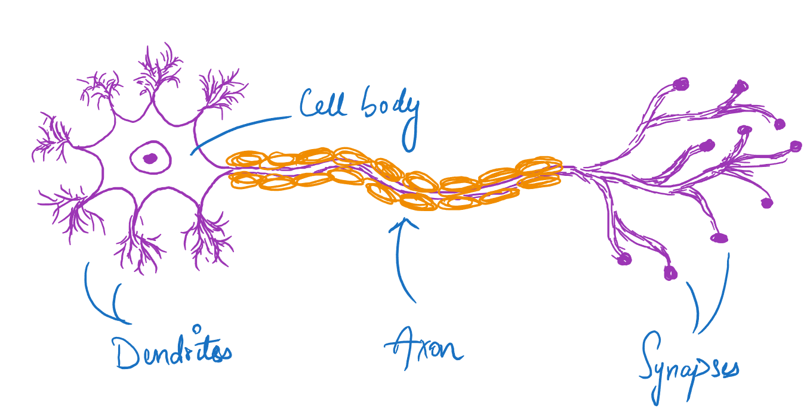
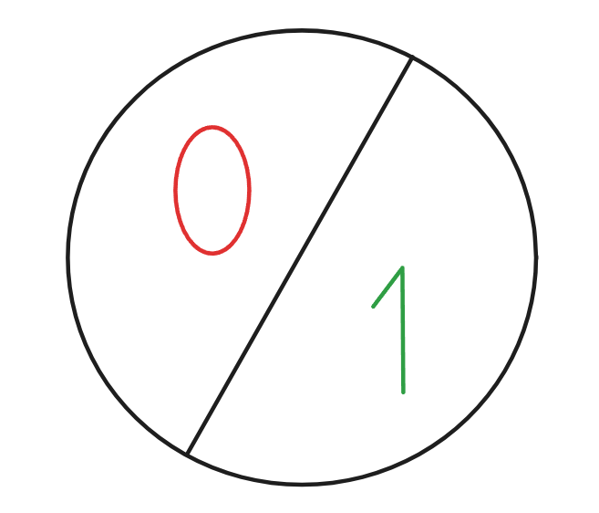
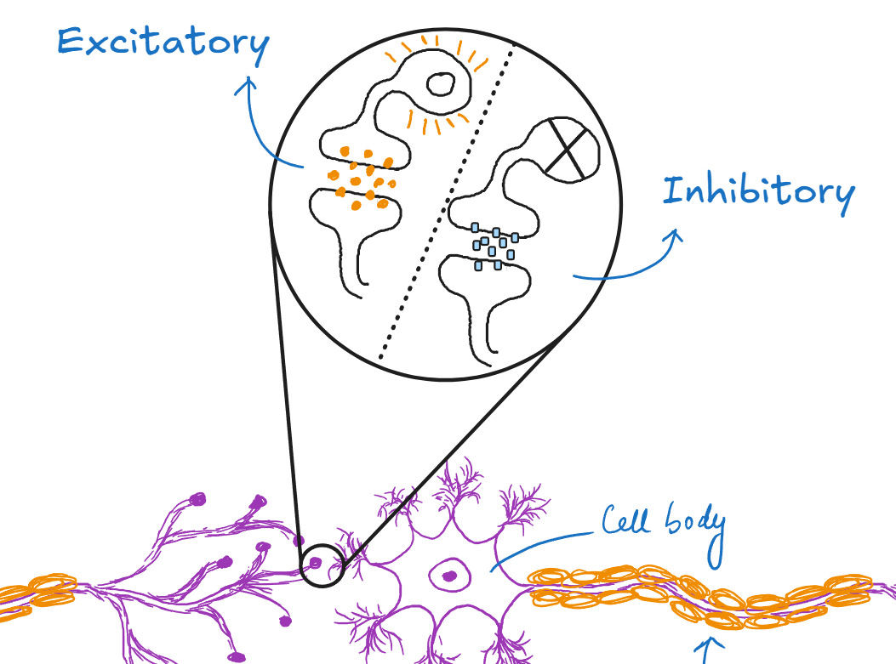
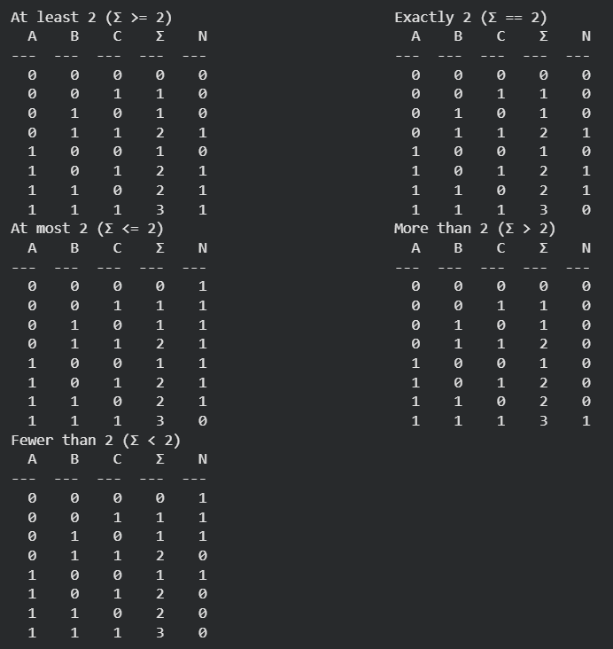
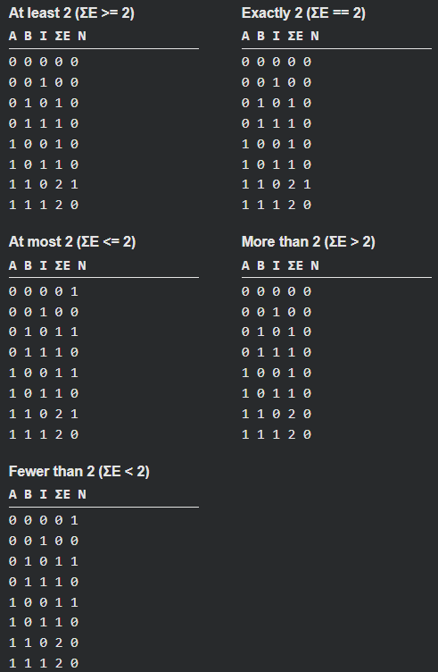
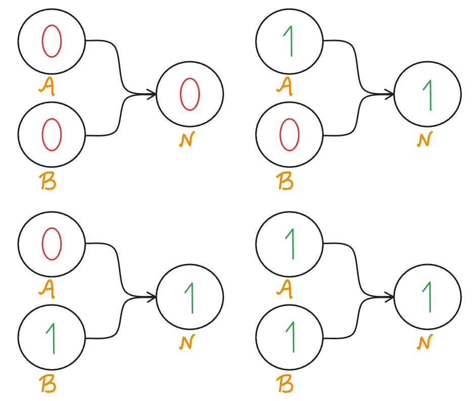
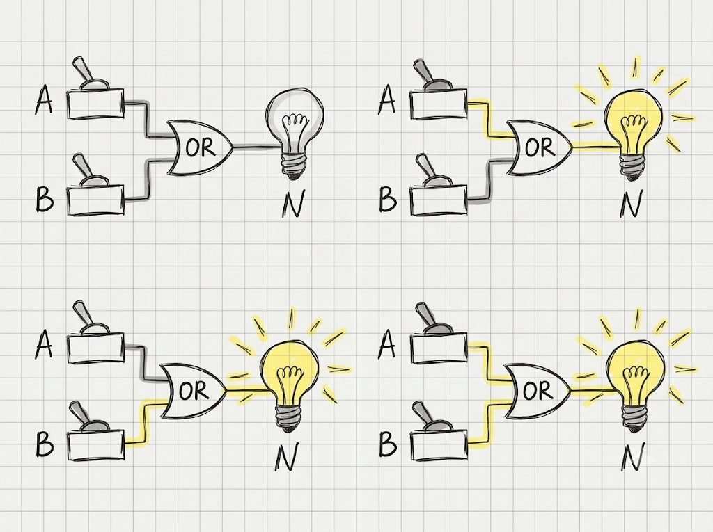
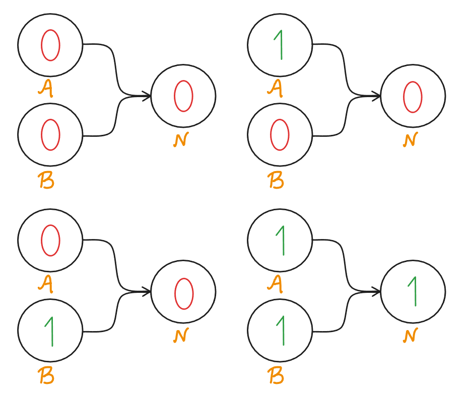
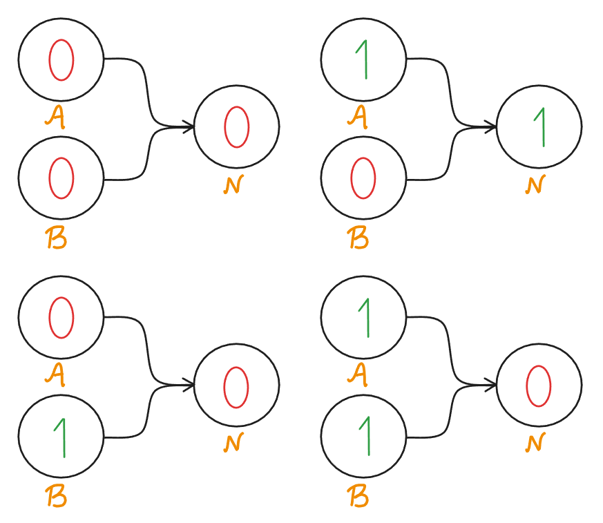

McCulloch–Pitts Reconstruction
A small, educational, discrete-time simulator for reconstructing selected constructions from McCulloch and Pitts (1943), A Logical Calculus of the Ideas Immanent in Nervous Activity.

Requirements
- Python 3.10 or newer
- No third-party packages
Run the tests
From this directory:
python -m unittest discover -s tests -vRun the figure reconstructions
python -m experiments.figure_1a
python -m experiments.figure_1b
python -m experiments.figure_1c
python -m experiments.figure_1d
python -m experiments.thermal_illusionModel conventions
- Activity is binary.
- Synaptic delays are positive integer time steps.
- A synapse reads its source at
t - delay. - Updates are synchronous: all neuron states at time
tare computed from already-recorded earlier states. Neuron.thresholdmeans the minimum number of active excitatory synapses required to fire. This is an integer-count convention. The paper phrases the condition as excitation exceeding a threshold.- Any active inhibitory synapse vetoes firing at that time.
- Refractory dynamics, learning, variable thresholds, and recurrent-network theorem machinery are not implemented yet.





What the scripts represent
The Figure 1a–1d scripts implement the operations described in the proof of Theorem II:
- 1a: one synaptic delay,
S(p1). - 1b: delayed disjunction,
S(p1 OR p2). - 1c: delayed conjunction,
S(p1 AND p2). - 1d: delayed conjoined negation,
S(p1 AND NOT p2).
These are functional reconstructions of the operations described in the text. Before claiming a complete reproduction, compare each circuit's topology against the scanned original figure.





The thermal-illusion script implements the temporal conditions stated in the paper (printed pages 8–9). It is a formal reconstruction of that example, not a modern physiological model of thermoreception.
Suggested next milestones
- Verify the four Figure 1 constructions against the original diagrams.
- Add a translator from acyclic networks to TPE expression trees (Theorem I).
- Add a constructive TPE-to-network compiler (Theorem II).
- Add realizability checks for Theorem III.
- Only then extend the simulator to the paper's cyclic-network results.
Primary source
W. S. McCulloch and W. Pitts (1943), A Logical Calculus of the Ideas Immanent in Nervous Activity, Bulletin of Mathematical Biophysics, 5, 115–133.
Stage 5 — Implementing temporal propositional logic

Directory: logic/
Files:
logic/expressions.pylogic/temporal_logic.py
Objective: Represent and evaluate the temporal propositional expressions introduced in the paper.
At this point, I will have a working network simulator. I now want a separate representation of the logical expressions that describe network behavior.
I will begin with the basic expression types:
- Variables.
- Temporal shifts.
- Disjunction.
- Conjunction.
- Conjunction with negation.
I will represent expressions using Python classes, forming an expression tree.
The evaluator will need access to the activity history of the relevant neurons.
For example:
[ S(P\land\neg Q) ]
should be evaluated using the values of (P) and (Q) at the preceding time step.
I will also decide how to handle times before the beginning of a simulation. Initially, I may use a false-valued initial history, but I will document this as a simulation convention rather than assume that it is a universal rule of the original paper.
Deliverables:
- Expression classes.
- Temporal shift evaluation.
- Boolean operator evaluation.
- Tests for nested temporal expressions.
Status: Not started.
Stage 6 — Reconstructing Figures 1a–1d
Directory: experiments/
Files:
experiments/figure_1a.pyexperiments/figure_1b.pyexperiments/figure_1c.pyexperiments/figure_1d.py
Objective: Reconstruct the elementary network constructions used in Theorem II.
Theorem II states that every TPE is realizable by a network of order zero.
The authors use four fundamental network constructions in Figures 1a–1d.
These correspond to:
| Figure | Logical expression |
|---|---|
| 1a | (S(P_1)) |
| 1b | (S(P_1\lor P_2)) |
| 1c | (S(P_1\land P_2)) |
| 1d | (S(P_1\land\neg P_2)) |
I will reconstruct each one independently.
For every figure, I will:
- Examine the original diagram.
- Identify its inputs, neurons, synapses, and delays.
- Write down the logical expression it is intended to realize.
- Construct the corresponding network.
- Test different input combinations.
- Evaluate the logical expression independently.
- Compare the network output with the logical output.
I will not assume that implementing the correct input-output function automatically means I have reproduced the exact topology shown in the original figure. I will compare my construction with the paper's diagrams and document any differences.
Local implementation illustrations: The diagrams below show the project’s functional reconstructions; they are not screenshots of the original paper’s figures.
Why I am including this passage: These diagrams provide the concrete network constructions that I will attempt to reproduce and test.
Deliverables:
- Four network constructions.
- Tests for each construction.
- Comparisons between network outputs and logical evaluations.
- Notes on any differences from the original diagrams.
Status: Not started.
Stage 7 — Reconstructing the thermal illusion
File:
experiments/thermal_illusion.py
Objective: Reconstruct the paper's example of heat sensation produced by transient cooling.
The paper provides an example involving two types of cutaneous receptors: one associated with heat and another associated with cold.
The authors describe a situation in which briefly applying a cold object to the skin can produce a sensation of heat, whereas applying it for a longer period produces a sensation of cold.
They express the required behavior using temporal propositional expressions and then construct a network using the fundamental elements from Figures 1a–1d.
I will investigate this example as an integration test of the simulator and temporal logic implementation.
The equations, expressed in modern notation, are:
[ N_3(t)=N_1(t-1)\lor \left[N_2(t-3)\land\neg N_2(t-2)\right] ]
[ N_4(t)=N_2(t-2)\land N_2(t-1) ]
Here:
- (N_1) represents heat receptor activity.
- (N_2) represents cold receptor activity.
- (N_3) represents the heat-sensation output.
- (N_4) represents the cold-sensation output.
I will first implement these equations directly using the temporal logic evaluator.
Then I will construct a neural network that realizes the same behavior.
This gives me two independent ways of calculating the expected output, which I can compare.
The local image set does not include a thermal-illusion figure, so this section remains a written reconstruction plan.
Why I am including this passage: This example demonstrates how the authors use temporal logical expressions to specify a behavior and then construct a network that realizes it.
Deliverables:
- Direct implementation of the equations.
- Short and long cooling input experiments.
- A network construction.
- Comparison between logical and simulated outputs.
Status: Not started.
Stage 8 — Reconstructing Theorem I
Objective: Translate a network of order zero into temporal propositional expressions.
Theorem I states:
Every net of order 0 can be solved in terms of temporal propositional expressions.
I want to understand the proof before attempting to automate it.
The central idea is to express the firing condition of a neuron in terms of the activity of the neurons connected to it.
For a neuron with multiple excitatory inputs and inhibitory inputs, its firing condition can be represented as a finite disjunction of qualifying combinations of excitatory inputs, with inhibitory conditions accounted for.
Because a network of order zero has no cycles, I should be able to repeatedly substitute expressions for upstream neurons until I obtain an expression in terms of the peripheral afferents.
I will first work through a small example manually.
Only after understanding the substitution process will I implement a network-to-expression translator.
Planned illustration: Original paper, page 6, Theorem I and its proof. The corresponding image is not in the local project assets yet.
Why I am including this passage: This is the central construction I need to understand before implementing the translator.
Deliverables:
- A manually derived example.
- An explanation of the substitution procedure.
- A network-to-TPE translator.
- Tests comparing the resulting expression with network behavior.
Status: Not started.
Stage 9 — Reconstructing Theorem II
Objective: Construct a network from a temporal propositional expression.
Theorem II states:
Every TPE is realizable by a net of order zero.
This is the reverse direction of Theorem I.
The four fundamental constructions from Figures 1a–1d provide the building blocks.
I will investigate how larger expressions can be constructed by combining smaller networks.
For example, if I can construct networks for two expressions, how can I combine them to construct a network for their conjunction or disjunction?
I will begin with manually constructed examples before attempting to automate the process.
The eventual goal is an expression-to-network compiler.
Planned illustration: Original paper, pages 6–7, Theorem II and its proof. The corresponding image is not in the local project assets yet.
Why I am including this passage: This proof explains how the fundamental network constructions can be combined to realize arbitrary expressions generated by the TPE grammar.
Deliverables:
- Manually constructed examples.
- A reusable composition procedure.
- An expression-to-network compiler.
- Tests comparing the compiled network with direct expression evaluation.
Status: Not started.
Stage 10 — Reconstructing Theorem III
Objective: Investigate the paper's characterization of temporal propositional expressions.
Theorem III provides a condition for determining whether an expression built from propositional variables and logical operations qualifies as a TPE.
The paper relates this condition to truth tables and Hilbert disjunctive normal form.
I will work through the statement and proof before implementing any test.
I want to understand:
- What the condition says.
- Why it is necessary.
- Why it is sufficient.
- How it relates to the TPE grammar.
- Whether I can construct examples that satisfy or violate the condition.
I will then write small programs to evaluate finite expressions and compare the results with the grammar-based construction.
The computational tests will support my understanding, but they will not replace the general mathematical proof.
Planned illustration: Original paper, page 7, Theorem III. The corresponding image is not in the local project assets yet.
Deliverables:
- A mathematical explanation of the characterization.
- Worked examples.
- A truth-table-based experiment.
- Tests for selected expressions.
Status: Not started.
Stage 11 — Investigating Theorems IV–VII
Objective: Investigate the equivalences between different assumptions about neuronal behavior.
After establishing the relationship between networks and temporal propositional expressions, the paper considers several alternative physiological assumptions.
The authors investigate whether different assumptions can be represented by equivalent networks, potentially with different timing.
The results include:
| Theorem | Subject |
|---|---|
| IV | Relative and absolute inhibition are equivalent in the extended sense. |
| V | Extinction is equivalent to absolute inhibition. |
| VI | Facilitation and temporal summation may be replaced by spatial summation. |
| VII | Alterable synapses can be replaced by circles. |
I will approach these results individually.
For each one, I will identify the original assumption, the alternative assumption, and the construction used to establish equivalence.
Where possible, I will implement small networks under both assumptions and compare their behavior.
I will be careful not to assume that equivalence means identical network structure or identical timing. The paper's definition allows for a different realizing network and differences in time.
Planned illustration: Original paper, pages 9–11, Theorems IV–VII. The corresponding image is not in the local project assets yet.
Deliverables:
- A separate explanation of each theorem.
- Small example networks.
- Comparisons of input-output behavior.
- Notes on timing and structural differences.
Status: Not started.
Stage 12 — Investigating cyclic networks
Objective: Extend the reconstruction to networks containing circular paths.
The earlier results concern networks without cycles.
The paper then introduces cyclic networks, in which activity can propagate around a circuit and regenerate activity in neurons that participated in the circuit.
This changes the nature of the problem.
In an acyclic network, repeated substitution eventually reaches the peripheral inputs. In a cyclic network, the dependence on previous activity can extend indefinitely into the past.
The authors introduce recursive functions to describe these more complicated relationships.
I will need to understand this formalism before extending the simulator.
I expect this stage to require additional machinery for representing and investigating cyclic behavior.
Planned illustration: Original paper, pages 11 onward, definition and discussion of cyclic networks. The corresponding image is not in the local project assets yet.
Deliverables:
- A precise definition of a cyclic network in my own words.
- Examples of networks containing cycles.
- A study of the recursive descriptions used in the paper.
- An extension of the simulator where necessary.
Status: Not started.
Stage 13 — Reconstructing Theorems VIII–X
Objective: Investigate the paper's results concerning cyclic networks and recursive functions.
I will work through these theorems after understanding the preceding definitions and constructions.
For each theorem, I will record:
- The exact statement.
- The definitions required to understand it.
- The proof strategy.
- Any constructions or examples provided by the authors.
- What I can reproduce computationally.
- What remains a mathematical argument rather than a simulation.
I will not claim to have reproduced a theorem merely because I have implemented an example related to it.
Deliverables:
- Worked notes for Theorems VIII–X.
- Relevant computational experiments.
- A record of which proof steps I have independently reconstructed.
Status: Not started.